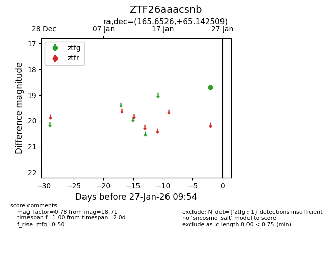
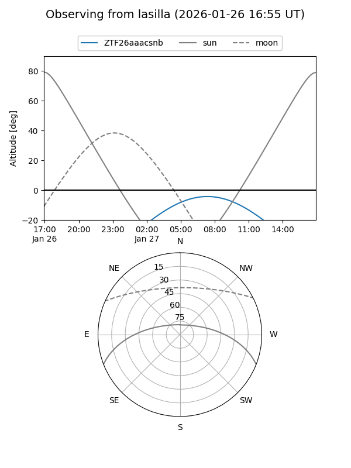
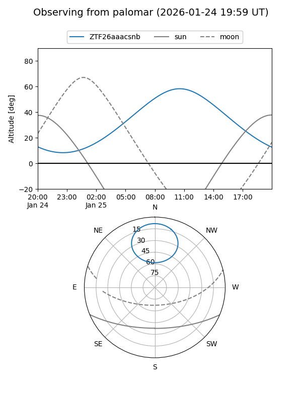

ZTF26aaacsnb
Target ZTF26aaacsnb at 2026-01-25 09:56
Aliases and brokers:
FINK: link
Lasair: link
ALeRCE: link
alt names
ZTF26aaacsnb (ztf,fink_ztf)
Coordinates:
equatorial (ra, dec) = 165.6526,+65.14251
equatorial (HMS+DMS) = 11:02:36.62,+65:08:33.03
galactic (l, b) = (139.7196,+48.28515)
Flags:
Photometry:
last ztfg=18.71
1 ztfg detections
Lightcurve

Visibility


Additional plots